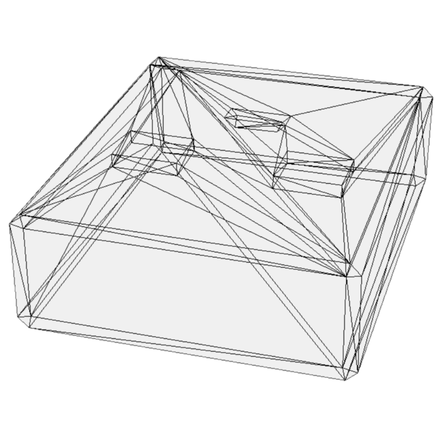
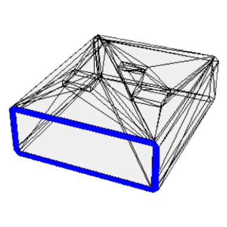
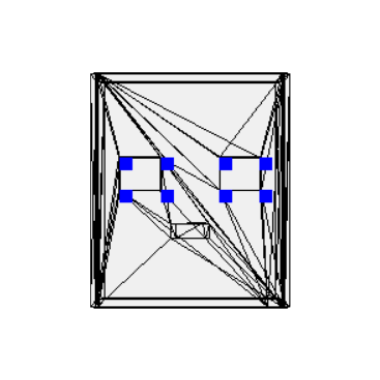
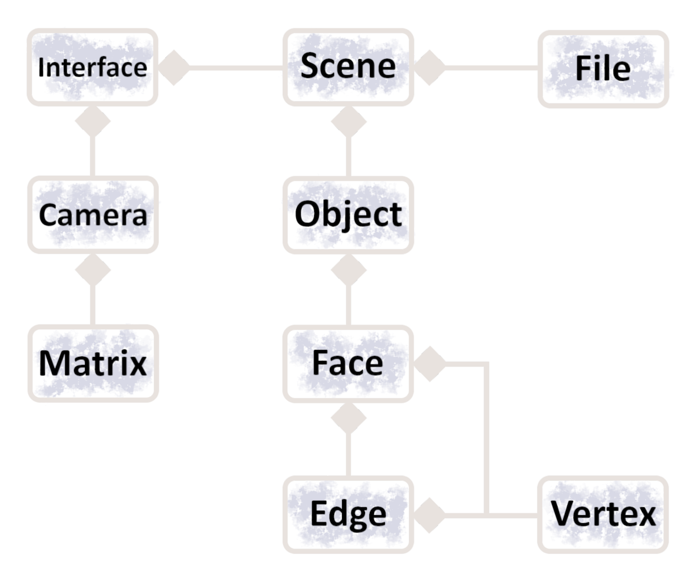
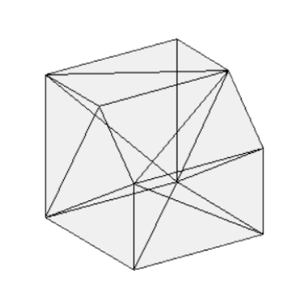
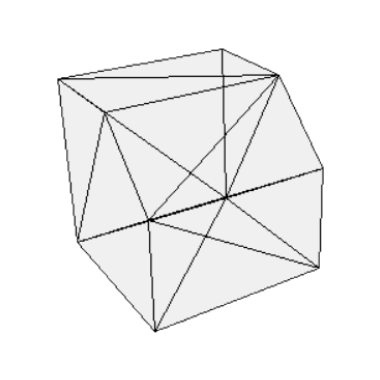

My CAD Software.




View 3D object files from every possible angle. Pan, zoom and rotate, resting assured that the software supports
both perspective and orthograthic projection, switchable at a click of a button.
^ Hover over the above images to read more. ^
The Software So Far...
- Consists of a large object-oriented data structure that holds all the relevant information about a scene.

^ OOP relationship diagram.
- Each scene is broken up into objects where every object has a number of faces and each face has vertices. There therefore exists compositional relationships between the scene and objects, objects and faces and faces and their vertices.
- Further classes are then defined to: map 3D coordinates to 2D onscreen coordinates; break up the .obj file into data that is inserted into the OO structure and to handle rendering, design tools and matrice operations.
Orthographic Projection
Perspective Projection